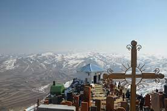
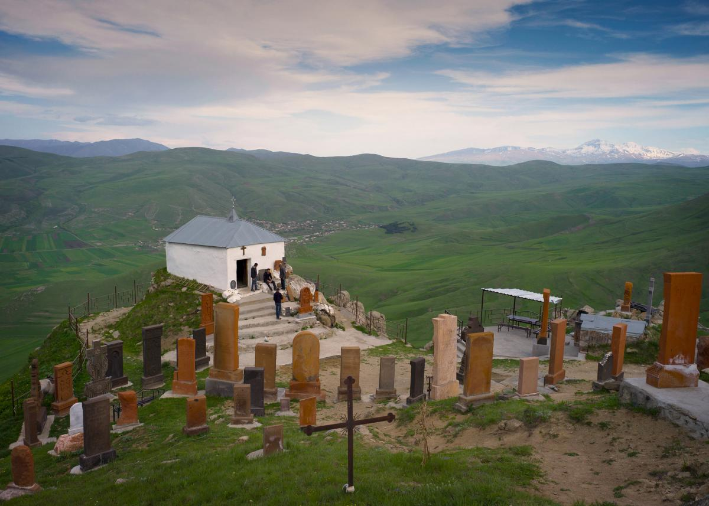
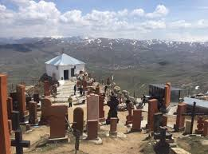

ՈՒԽՏԱԳՆԱՑՈՒԹՅՈՒՆ ԴԵՊԻ ՀԱՐԹԱԳՅՈՒՂ՝ ՍՈՒՐԲ ՀՈՎՀԱՆՆԵՍ ՄԱՏՈՒՌ
Սկիզբ: 09:00
Ավարտ: 18:00
Ամեն : շաբաթ | կիրակի
Գինը՝
4.500AMD
6.500AMD
ՆԿԱՐԱԳԻՐ
Հատուկ ուխտագնացության շրջանակներում առաջին կանգառը կլինի Ապարանի Սբ. Խաչ եկեղեցին, որը հայտնի է նաև «Քասախի բազիլիկ» անվանումով: Այնուհետև կուղևորվենք դեպի Լոռու մարզ, որտեղ էլ Ճգնավոր լեռան ստորոտից կսկսենք մեր քայլարշավը: 2157 մետր բարձրության վրա գտնվող Հարթագյուղի Սուրբ Հովհաննես մատուռի մասին պտտվող լեգենդներն ու պատմվող պատմություններն օր օրի ավելանում են: Սրբի հրաշագործ ուժի, իրականացված նպատակների, բուժված հիվանդների ու հղիացած կանանց մասին պատմությունները շատ են: Տեղացիները վստահեցնում են՝ եթե հավատքով ես այցելում մատուռ, երազանքներդ ու ցանկություններդ իրականանում են: Մատուռը կառուցվել է 1958թ-ին՝ այն տեղում, որտեղ ամփոփված է Սուրբ Հովհաննեսի աճյունը:
Հետադարձին կունենանք կանգառ հայկական այբուբենի եզակի հուշարձան հանդիսացող Տառերի պուրակում:
Հ.Գ. Խնդրում ենք հաշվի առնել, որ սա ուխտագնացություն է, և մեզ սպասվում է մոտ 6 կմ երկարությամբ, միջին բարդության քայլարշավ: Մասնակիցներին խորհուրդ է տրվում լինել սպորտային, հարմարավետ կոշիկներով, տաք հագուստով, կրել պաշտպանիչ գլխարկ, ունենալ մեկ օրվա համար անհրաժեշտ սնունդ և ջուր:
ԳԻՆԸ ՆԵՐԱՌՈՒՄ Է
1․ գիդի ծառայություն
2․ տրանսպորտի ծառայություն



Մեկնարկի վայր - Երևանի Կոմիտասի անվան Պետական Կոնսերվատորիա Հաշվի առնելով, որ տեղերը սահմանափակ են, խնդրում ենք նախօրոք կապվել մեզ հետ և գրանցվել: